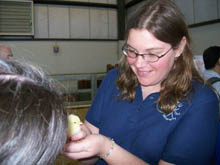
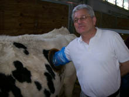

Contact
If you would like more information about Kids' Tech University, or would like enrollment information, please visit our official website http://www.kidstechuniversity.com.
For more information, please contact:
Dr. Kristy Collins
Virginia Bioinformatics Institute
Virginia Tech
kdivitto@vbi.vt.edu
If you would like more information about Kids' Tech University, or would like enrollment information, please visit our official website http://www.kidstechuniversity.com.
For more information, please contact:
Dr. Kristy Collins
Virginia Bioinformatics Institute
Virginia Tech
kdivitto@vbi.vt.edu
|   |